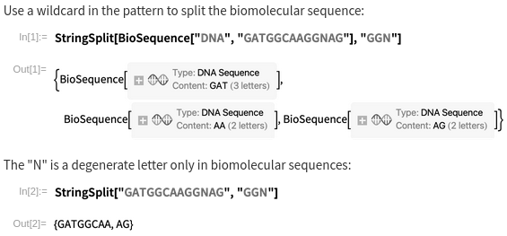

Splitting hairs
2024-01-11The split function,
near-universal in modern programming languages,
for separating a string into a list of strings on a delimiter:
how hard could it be?
how hard could it be?
Some standard utility functions are "objective"
in the sense that everyone agrees on how they should work.
If you call reverse in a language that has it
on the array [1,2,3],
you can be certain that you'll get back [3,2,1],
regardless of what language it is.
There's no weird edge cases that might be language-dependent --
reversing the empty array unambiguously gives the empty array.
Other common functions are "opinionated"
in the sense that the edge cases do differ between languages.
The simplest example I can think of is the one commonly represented by the % symbol.
In some languages,
like Ruby and Python,
it's a modulo operator,
copying the sign of its second argument
(so -7 % 5 is 3).
In others,
like JavaScript and C,
it's a remainder operator,
copying the sign of its first argument
(so -7 % 5 is -2).
Haskell has all of div, mod, quot, rem, divMod, and quotRem,
just to cover all its bases.
For a while,
I had sort of assumed split was pretty objective.
Every language probably does the same thing,
because intuitively,
there aren't many places where you have to make weird decisions,
if you don't think about it too hard.
But if you do start to think about it...
the delimiter
One thing everyone agrees on
is that split is allowed to take at least two arguments,
a string to split and a delimiter to split on.
But languages start to differ
in what the delimiter is allowed to be.
Possibilities include:
- a character
- a string
- a list of strings
- a regular expression
- a boolean function on characters
- a function that takes all the arguments to
splitand does whatever it wants (no, seriously)
When languages support multiple of these options, they also differ as to whether they're the same overloaded function or separate functions. Also, when given a regex with capture groups, some languages splice the captured strings into the output array.
the limit
Many languages also support a third numeric parameter, which limits the total number of items to split into. For example, perhaps you have a file where each line is a timestamp, a username, and a message, all separated by spaces, but where the message might contain spaces. In this case, you'd want to split the line on spaces with a limit of length 3 on the returned array.
Not all languages have this feature,
but among those that do,
they basically all agree
that the number counts the maximum number of pieces to split into.
There's some weirdness with negative numbers having totally unrelated effects
that we'll get into later,
but in the realm of positive numbers everyone is mostly consistent.
So giving a 1 will return just an array with your original string as the only item,
and giving a 2 will return the pair consisting of everything before the first occurrence of the delimiter
and everything after.
... except then there's Python,
where the number actually counts the maximum number of splits to make.
So if you want an array of two elements,
you give a 1,
because you want a split to happen at most one time.
This is just off by one from every other language's convention for no reason.
the default
I mentioned split is allowed to take two arguments,
but it might be able to take fewer.
If you omit the delimiter,
you often get something from a class of functions I'll refer to generically as "words".
The words function usually splits on runs of consecutive whitespace.
It often also trims leading and trailing whitespace,
even if this wouldn't happen by default.
Whitespace almost always includes ASCII whitespace,
but it might also include Unicode whitespace as well.
All the languages that support a unary split
do some variant of words.
... except then there's JavaScript,
where "any string".split() returns the one-element array ["any string"].
Why?
Who wants this?
I guess you're "splitting on nothing"??
trimming
I briefly alluded to this above,
but this is where it gets way, way messier.
The "purest" form of split,
in my subjective view,
doesn't trim empty strings anywhere:
(python)> '_example_string___splitting__'.split('_')
['', 'example', 'string', '', '', 'splitting', '', '']
Some languages will trim empty strings from the end of the array
(which might make sense if e.g. your delimiter is "\n"
and you want the lines of a text file):
(ruby)> '_example_string___splitting__'.split('_')
["", "example", "string", "", "", "splitting"]
Others will trim on both sides:
(mathematica)> StringSplit["_example_string___splitting__", "_"]
{example,string,,,splitting}
Still others will only trim one empty string from some sides:
(racket)> (string-split "_example_string___splitting__" "_")
'("example" "string" "" "" "splitting" "")
And sometimes the behavior depends on whether a delimiter or limit argument was given;
in particular,
many languages will disable trim-by-default if given a limit argument,
which means you can give an otherwise-nonsensical limit of -1
to get an unlimited split except without the trimming.
Like I said, it's a mess.
By the way, sometimes the trimming behavior is special-cased for 0-length matches!
zero-length matches
We'll use an example language that doesn't do any trimming, to show what's going on without obscuring anything.
(javascript)> 'fluff'.split('f')
[ '', 'lu', '', '' ] // no trimming
Splitting on the empty string is a common idiom in many languages to turn a string into a list of characters. But this behavior is actually inconsistent!
(javascript)> 'fluff'.split('')
[ 'f', 'l', 'u', 'f', 'f' ] // trims empty strings at start and end
The "correct" output, without any special rules about zero-length matches, is
[ '', 'f', 'l', 'u', 'f', 'f', '' ]
because there is an empty string before and after the last "f". If you're not convinced, here's a comparison that I hope you can agree is visibly contradictory:
(javascript)> ''.split('test')
[ '' ] // as expected
(javascript)> ''.split('')
[] // more matches, fewer outputs!
Which one is "right"? The first one might feel unintuitive, but it's the only sensible option if you think about it, for many reasons:
'any string'.split('no match') = ['any string']'any string'.split(' ').length = 'any string'.count(' ') + 1(a + ',' + b).split(',') = a.split(',') ++ b.split(',')- the output of
splitshould never be an empty array. where did the input go?
What's the "right" answer for the second one? It's the array with two empty strings. This might sound absurd at first, but in fact that's what you get when you split any other string on itself:
(javascript)> 'abc'.split('abc')
[ '', '' ]
Here's a different example of a zero-width match at a string boundary:
(javascript)> 'fluff'.match(/(?=f)/g)
[ '', '', '' ] // 3 matches (0-width match before each f)
(javascript)> 'fluff'.split(/(?=f)/g)
[ 'flu', 'f', 'f' ] // 2 splits - trims empty string at start
The regex engine very clearly shows three matches, but only two of them actually result in splits. And the behavior is not limited to string boundaries:
(javascript)> 'fluff'.match(/(?=f)|u/g)
[ '', 'u', '', '' ] // 4 matches
(javascript)> 'fluff'.split(/(?=f)|u/g)
[ 'fl', 'f', 'f' ] // 2 splits
Here we see that zero-width matches adjacent to other matches are also ignored!
summary by language
Here's what the columns of this table mean:
-
trim: whether empty strings are trimmed in the output. The notation I'm using is the two-character string
xy, wherexis how many empty strings are trimmed from the front andyis how many empty strings are trimmed at the end. An appended+means that specifying any limit parameter changes the trimming behavior to00. -
zero: whether length-zero matches are discarded. There are three characters, where the first is at the beginning of the string, the second is adjacent to other matches, and the third is at the end of the string. The second character is
_if it is not possible to get a zero-length match adjacent to another match with the available tools. A@means the behavior can be specified by the user. -
lim: whether a limit parameter is supported. This is y if the limit has the standard behavior of returning an array of at most that length, ~ if the limit has some other behavior, and n if there is no limit parameter.
-
cap: whether capture groups in regexes are spliced between the returned elements. This is y if they are, ~ if there's an option for them to be, and n if they aren't. An appended
-means that groups that aren't found are omitted (rather than included as an undefined/null entry).
| string | regex | trim | zero | lim | cap | default | |
|---|---|---|---|---|---|---|---|
| C# | String#Split |
Regex#Split |
00 |
nnn |
y | y- | words |
| Haskell | splitOn |
00 |
n_y |
n | |||
| Java | String#split |
0*+ |
ynn |
y | n | ||
| JavaScript | String#split |
String#split |
00 |
yyy |
~ | y | undefined (entire string) |
| Julia | split |
split |
00 |
yyy |
y | n | isspace + trim all empty |
| Lua | |||||||
| Mathematica | StringSplit |
StringSplit |
** |
@n@ |
y | n | Whitespace (words) |
| Perl | split |
split |
0*+ |
yyn |
y | y | " " (words) |
| PHP | explode |
preg_split |
00 |
nnn |
y | ~- | |
| Python | str#split |
re.split |
00 |
nnn |
~ | y | None (words) |
| R | strsplit |
strsplit |
01 |
??? |
n | n | |
| Racket | string-split |
regexp-split |
11 |
??? |
n | n | words |
| Ruby | String#split |
String#split |
0*+ |
yyn |
y | y- | $; (nil → words) |
| Rust | str#split |
00 |
n_n |
y | |||
| Vimscript | split |
*1 |
nnn |
n | n | words |
language specific commentary
Almost all of the splits from these languages are unique
in ways that can't be expressed in a simple table.
These examples will mostly cover edge cases,
because those are of course the most interesting.
c#
using System;
using System.Text.RegularExpressions;
class A {
static void Main(string[] args) {
Console.WriteLine("1.");
Array.ForEach("test".Split(""), Console.WriteLine);
// => ["test"]
Console.WriteLine("===");
Console.WriteLine("2.");
Array.ForEach(new Regex("").Split("test"), Console.WriteLine);
// => ["", "t", "e", "s", "t", ""]
Console.WriteLine("===");
}
}
Bizarrely, splitting on the empty string returns a singleton array with the original input string, the same as if the delimiter were not found in the input. But splitting on the empty regex results in the "morally correct" behavior I described in the section about zero-length matches! (It also doesn't discard zero-length matches adjacent to other matches.)
One of the regex split signatures is Split(String, String, RegexOptions, TimeSpan).
TimeSpan?!
It turns out this one takes a timeout parameter,
in case your regex incurs excessive backtracking.
haskell
import Data.List.Split
main = do
putStrLn . show $ splitOn "" ""
-- => [""]
putStrLn . show $ splitOn "" "abc"
-- => ["","a","b","c"]
putStrLn . show $ split (condense . keepDelimsR $ whenElt (<0)) [1,2,-3,4,-5,-6,7 :: Int]
-- => [[1,2,-3],[4,-5,-6],[7]]
Haskell doesn't actually have a built-in split function,
but it does have the split library.
The base splitOn is fairly unremarkable,
but the general split is cooler than usual --
it can take a predicate on characters as a delimiter,
and a number of provided combinators let you customize things like
what to do with the matched delimiters
and blank chunks.
It also works on generic lists,
not just strings
(in fact,
it's implemented fully in terms of lists,
and Haskell strings are unfortunately just lists of characters).
It does strike me as a little odd that the vast majority of languages only have split for strings and not arrays. There's nothing fundamentally different between splitting a string on spaces and splitting an array on negative numbers, really. Similarly, I've occasionally wished languages had regexes but for arrays.
java
import java.util.Arrays;
class A {
public static void main(String[] args) {
System.out.println(Arrays.toString("test".split("(?=t)|s|$", -1)));
// => ["te", "", "t", ""]
System.out.println("".split("").length); // => 1
System.out.println("a".split("").length); // => 1
System.out.println("ab".split("").length); // => 2
System.out.println("".split("", -1).length); // => 1
System.out.println("a".split("", -1).length); // => 2
System.out.println("ab".split("", -1).length); // => 3
}
}
In Java,
zero-length matches at the beginning of the string are always trimmed,
but not adjacent to other matches
or at the end of the string
(with a negative limit).
So "abc".split("") is ["a", "b", "c"],
but "abc".split("", -1) is ["a", "b", "c", ""].
For some reason,
"".split("") is [""]
regardless of the limit parameter.
Also,
there's no way to split on a fixed (non-regex) string.
javascript
console.log('a b c d e'.split(' ', 3));
// => [ 'a', 'b', 'c' ]
console.log('a-1-b-2-c-3-d-4-e'.split(/-(\d)-/, 3));
// => [ 'a', '1', 'b' ]
console.log('test'.split(/((?=t)|s|$)/));
// => [ 'te', 's', 't' ]
All of JavaScript's unique weirdness is related to its limit parameter.
Unlike all other languages,
which put the entire remainder of the string in the last element of the returned array,
giving a limit to JavaScript just tells it to return the first n elements of the array.
Also,
spliced capture groups when splitting on a regex count towards this total.
So s.split(d, n) is always identical to s.split(d).slice(0, n),
as far as I can tell.
julia
println(split("test", r"(?=t)|s|$"))
# => SubString{String}["te", "t"]
println(split("", ""))
# => SubString{String}[""]
println(split("a", ""))
# => SubString{String}["a"]
println(split(" hello there "))
# => SubString{String}["hello", "there"]
println(split(" hello there ", isspace))
# => SubString{String}["", "", "hello", "", "there", "", ""]
Julia exhibits the same very strange behavior as Java
when splitting the empty string on the empty string --
is there a good reason for this that I'm missing?
The delimiter argument can be a predicate on characters.
It defaults to isspace,
but the keepempty parameter defaults to true if a delimiter is given
and false otherwise,
which is an amusing way to simulate a words function
without actually having to write any more code.
Also,
Julia is our first language with an rsplit!
This is the same as split,
except it looks from right to left instead of left to right.
(You can't do this with regexes, since they fundamentally match left to right.)
lua
Lua is a scripting language without a split function.
Lua...
is a scripting language...
without a split function.
There are a lot of things wrong with Lua, but this one is pretty unforgivable. Maybe I should write a blog post about all the things wrong with Lua!
mathematica
Print@ToString[StringSplit["aaa.aaa", "a"], InputForm]
(* => {"."} *)
Print@ToString[StringSplit["abc", "", All], InputForm]
(* => {"", "a", "b", "c", ""} *)
Print@ToString[StringSplit["abc", Longest["a"...], All], InputForm]
(* => {"", "", "b", "c", ""} *)
Print@ToString[StringSplit[
"a!5b!c!10d!e!20f",
"!"~~x:DigitCharacter.. :> ToExpression[x]^2,
3
], InputForm]
(* => {"a", 25, "b!c", 100, "d!e!20f"} *)
This one is, all things considered,
fairly reasonable.
Empty strings are trimmed from the beginning and end by default,
but this can be disabled by passing All.
The split function has full access to Mathematica's incredible pattern infrastructure,
which is amazing and I wish existed in a non-proprietary language.
While researching for this post, I found this hilarious clarification that the capital letter "N" does not undergo special treatment by default in the Mathematica documentation:

perl
use Data::Dump qw(dump);
dump(split(/(?=t)|s|$/, 'test'));
dump(split(/(?=t)|s|$/, 'test', -1));
# => ("te", "t"), ("te", "t", "")
dump(split(//, '')); dump(split(//, '', -1));
# => (), ()
dump(split(//, 'abc')); dump(split(//, 'abc', -1));
# => ("a", "b", "c"), ("a", "b", "c", "")
$_ = " hello\n\t there ";
dump(split); # => ("hello", "there")
dump(split ' '); # => ("hello", "there")
dump(split / /); # => ("", "", "hello\n\t", "", "there")
dump(split /^/, "one\ntwo\nthree\n"); # => ("one\n", "two\n", "three\n")
dump(split /^|^/, "one\ntwo\nthree\n"); # => "one\ntwo\nthree\n"
dump(split //, '', -1); # => ()
dump(split /test/, '', -1); # => ()
This one is... quite something.
First of all,
there are two special cases for the delimiter.
If it is not given or exactly the string " ",
then it actually splits on contiguous runs of any whitespace
(returning no empty strings).
If you want to actually split on spaces,
you have to pass the regex / /.
Also,
passing exactly the regex /^/ enables multiline mode
(so that ^ matches starts of lines instead of the start of the string),
because that's probably what you wanted.
Finally,
splitting the empty string on anything,
even the empty delimiter,
returns the empty array.
php
<?php
var_dump(explode("", "test"));
// => false (warning)
var_dump(explode("t", "test"));
// => ["", "es", ""]
var_dump(explode(" ", "one two three", -1));
// => ["one", "two"]
var_dump(preg_split('//', ""));
// => ["", ""]
var_dump(preg_split('//', "test"));
// => ["", "t", "e", "s", "t", ""]
var_dump(preg_split('/(?=t)|s|$/', "test"));
// => ["", "te", "", "t", ""]
var_dump(preg_split('/_(\d)(\d)?/', "one_12two_3three", -1,
PREG_SPLIT_DELIM_CAPTURE | PREG_SPLIT_OFFSET_CAPTURE));
// => [["one", 0], ["1", 4], ["2", 5], ["two", 6], ["3", 10], ["three", 11]]
var_dump(explode(1, true));
// => ["", ""]
PHP has several peculiarities. That is a true statement both in the context of this blog post and in general.
To start,
it doesn't like splitting on an empty string,
but instead of throwing an error or similar
it just emits a warning and returns the boolean false.
Also,
when the limit parameter is negative,
it decides this should mean
"remove that many entries from the end of the array".
In regex land,
neither of these peculiarities are true.
There's an option for whether to splice capture groups,
and interestingly also a flag that tells you the character offset
of each component of the returned array,
in case you wanted that.
Splitting true on 1 returns an array with two empty strings,
because lol PHP.
python
import re
try: print('test'.split(''))
except: pass # ValueError
print('test'.split('t'))
# => ['', 'es', '']
print('one two three four'.split(' ', 2))
# => ['one', 'two', 'three four']
print(re.split(r'', 'test'))
# => ['', 't', 'e', 's', 't', '']
print(re.split(r'(?=t)|s|$', 'test'))
# => ['', 'te', '', 't', '']
There are only two things of note.
One is that the base split function doesn't like splitting on empty strings,
and throws a ValueError
(but the regex one handles them fine).
The other is that both the base and regex ones
interpret the limit as "number of splits"
rather than "number of returned entries",
which as far as I can tell is done by no other language.
r
strsplit("", "") # => []
strsplit("", "abc") # => []
strsplit("abc", "abc") # => [""]
strsplit("abc", "") # => ["a" "b" "c"]
strsplit("aaa", "a") # => ["" "" ""]
strsplit("abcdeabcdeabcde", "(?!c)", perl=TRUE)
# => "a" "b" "c" "d" "e" "a" "b" "c" "d" "e" "a" "b" "c" "d" "e"
strsplit("abcdeabcdeabcde", "(?<=.)(?!c)", perl=TRUE)
# => "a" "bc" "d" "e" "a" "bc" "d" "e" "a" "bc" "d" "e"
strsplit("abcdeabcdeabcde", "(?=c)", perl=TRUE)
# => "ab" "c" "deab" "c" "deab" "c" "de"
strsplit("abcdeabcdeabcde", "(?<=.)(?=c)", perl=TRUE)
# => "ab" "cdeab" "cdeab" "cde"
strsplit("abcabcabc", "(?<!.)(?=a)", perl=TRUE)
# => "a" "bcabcabc"
It seems like this split function is just straight up buggy.
For example,
as you can see when splitting on (?=c),
the output separates the first character of the following string
from the rest of it for no clear reason
(it does the same thing when splitting on (?=cde)).
But if you insert a lookbehind of .,
then suddenly everything works correctly.
There are many similarly baffling examples,
some shown above.
Also,
for some reason there's both strsplit
and str_split
with different edge-case behavior,
but I can't be bothered to investigate further.
racket
#lang racket
(string-split "abca" "a") ; '("bc")
(string-split "aabcaa" "a") ; '("" "bc" "")
(string-split "abca" "") ; '("" "a" "b" "c" "a" "")
(regexp-split #rx"a" "abca") ; '("" "bc" "")
(regexp-split #rx"a" "aabcaa") ; '("" "" "bc" "" "")
(regexp-split #rx"" "abca") ; '("" "a" "b" "c" "a" "")
(string-split "a123aaa456a" "a" #:trim? #f)
; '("" "123" "" "" "456" "")
(string-split "a123aaa456a" "a" #:trim? #f #:repeat? #t)
; '("" "123" "456" "")
(string-split "1test2" #rx"[0-9]") ; '("test")
(regexp-split #rx"[0-9]" "1test2") ; '("" "test" "")
Racket exhibits the unique behavior that exactly one empty string is trimmed from either side,
except when the delimiter is the empty string,
in which case no trimming takes place.
This is because the trimming is actually done before the split occurs,
and trimming an empty string from the input string has no effect.
But there are flags to disable the initial trim,
as well as a flag to condense repeated delimiters.
The regexp-split function does not have this property,
but string-split is also capable of taking a regex
(why are they separate functions then?),
in which case it does have this behavior.
This means that passing the same input and regex
to string-split and regexp-split
(in the opposite order,
because the arguments are swapped)
can give different results.
ruby
p 'aaa.aaa'.split('a') # => ["", "", "", "."]
p 'aaa'.split('a') # => []
p 'test'.split(/(?=t)|s|$/, -1) # => ["te", "t", ""]
p ''.split('', -1) # => []
p 'a'.split('', -1) # => ["a", ""]
p ''.split('test', -1) # => []
p 'a'.split('test', -1) # => ["a"]
p 'a'.split('a', -1) # => ["", ""]
Ruby is another of the languages that trims arbitrarily many empty strings from the right unless you give it a negative limit. Also, like Perl, splitting the empty string on anything returns the empty array, even with trimming disabled.
rust
fn main() {
println!("{:?}", "".split("").collect::<Vec<&str>>());
// => ["", ""]
println!("{:?}", "test".split("").collect::<Vec<&str>>());
// => ["", "t", "e", "s", "t", ""]
println!("{:?}", "test".split("t").collect::<Vec<&str>>());
// => ["", "es", ""]
}
For once,
I don't think I have anything to say --
Rust's split is just perfectly self-consistent and reasonable.
Rust also has an extensive collection of alternative split functions:
splitn allows giving a limit,
split_once limits to 2 and returns an option type for if the delimiter isn't found,
split_inclusive leaves the delimiter at the ends of each piece,
split_ascii_whitespace and split_whitespace split on runs of ASCII and Unicode whitespace respectively,
and split_terminator drops the final occurrence of the delimiter if it exists.
There's also rsplit, rsplitn, rsplit_once, and rsplit_terminator
for the right-to-left versions of these.
vimscript
:redir @"
:echo split('test', '', 1)
: => ['test'] <c-u>
:echo split('test', '\zs')
: => ['t', 'e', 's', 't'] <c-u>
:echo split('test', '\zs', 1)
: => ['', 't', '', 'e', '', 's', '', 't', ''] <c-u>
:echo split('test', '\zet\|s\|$', 1)
: => ['', 'te', '', 't', ''] <c-u>
:echo split('', '', 1)
: => [''] <c-u>
:echo split('', '\zs', 1)
: => [''] <c-u>
:echo split('', 'test', 1)
: => [''] <c-u>
:redir END
Pdd
There are a few weird things here.
For one,
the empty string seems to never match,
so splitting on it does nothing.
But if you force a match with \zs,
you get the standard "list of characters" behavior like other languages.
But if you then add the "keepempty" flag,
you get a bunch of empty strings interspersed in the result!
It seems like \zs matches twice between every character,
probably for some arcane regex-internals reason.
Also,
splitting the empty string on anything always returns [''],
regardless of what you split on.
conclusion
I'm sure that many people,
before reading this post,
would have intuitively agreed with the statement
"most languages implement split the same way".
This could not be further from the truth:
if you look at the table,
you can see that not a single pair of languages here
behaves identically!
Is there any lesson to be learned from all of this?
I dunno,
I guess it speaks to how much complexity can be hidden
within seemingly simple, "primitive" operations.
When I started writing this post,
I expected it to be maybe 2 or 3 pages long,
going over a few of the curious differences I'd noticed.
I certainly did not expect to end up with a 3,000+ word novel,
because how could there possibly be that much to say about split?
In any case, I hope you are not too mad at me for filling your brain with more useless information about this single library function than any one human should ever need.
comments
There are no comments yet.